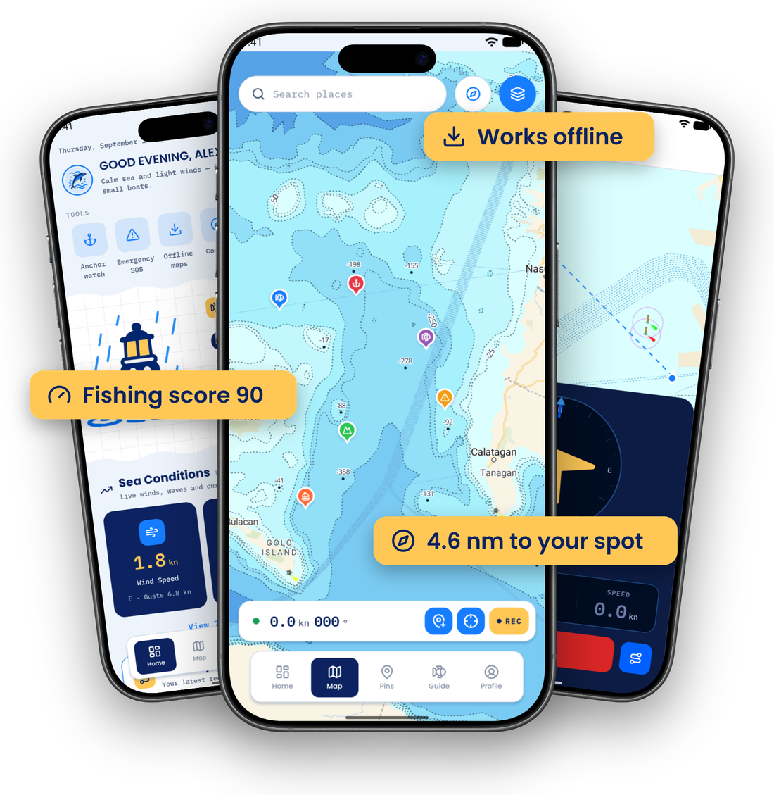
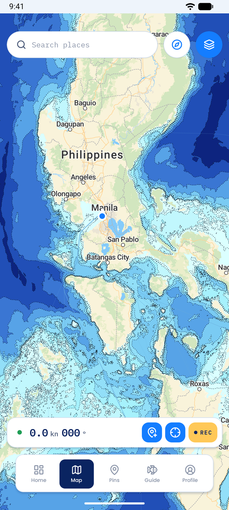
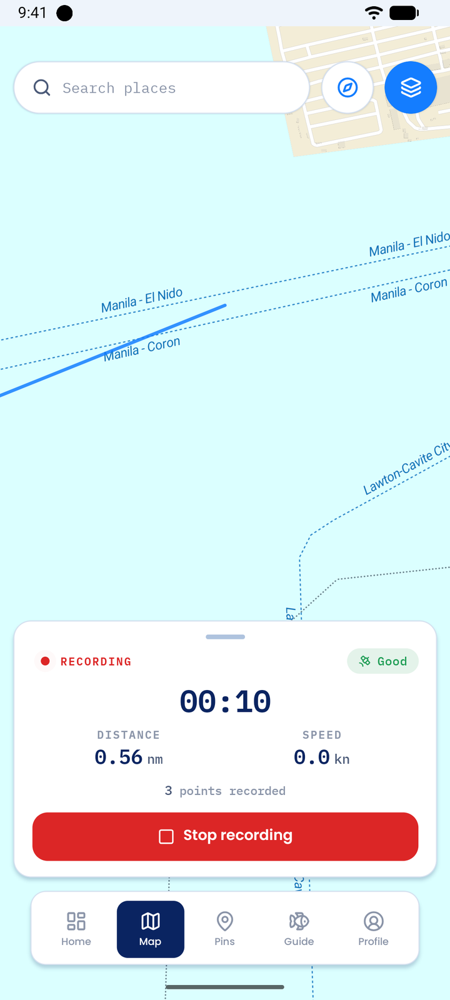
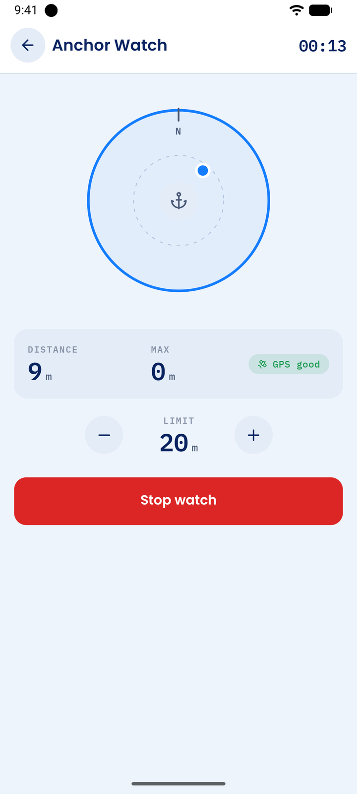
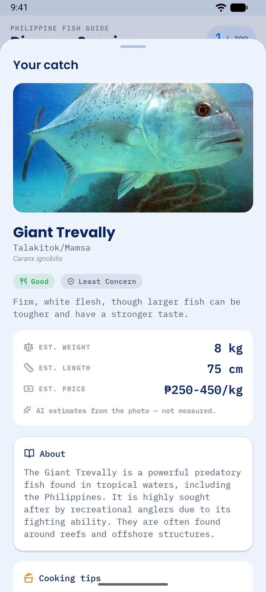
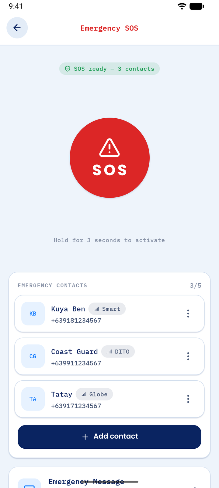
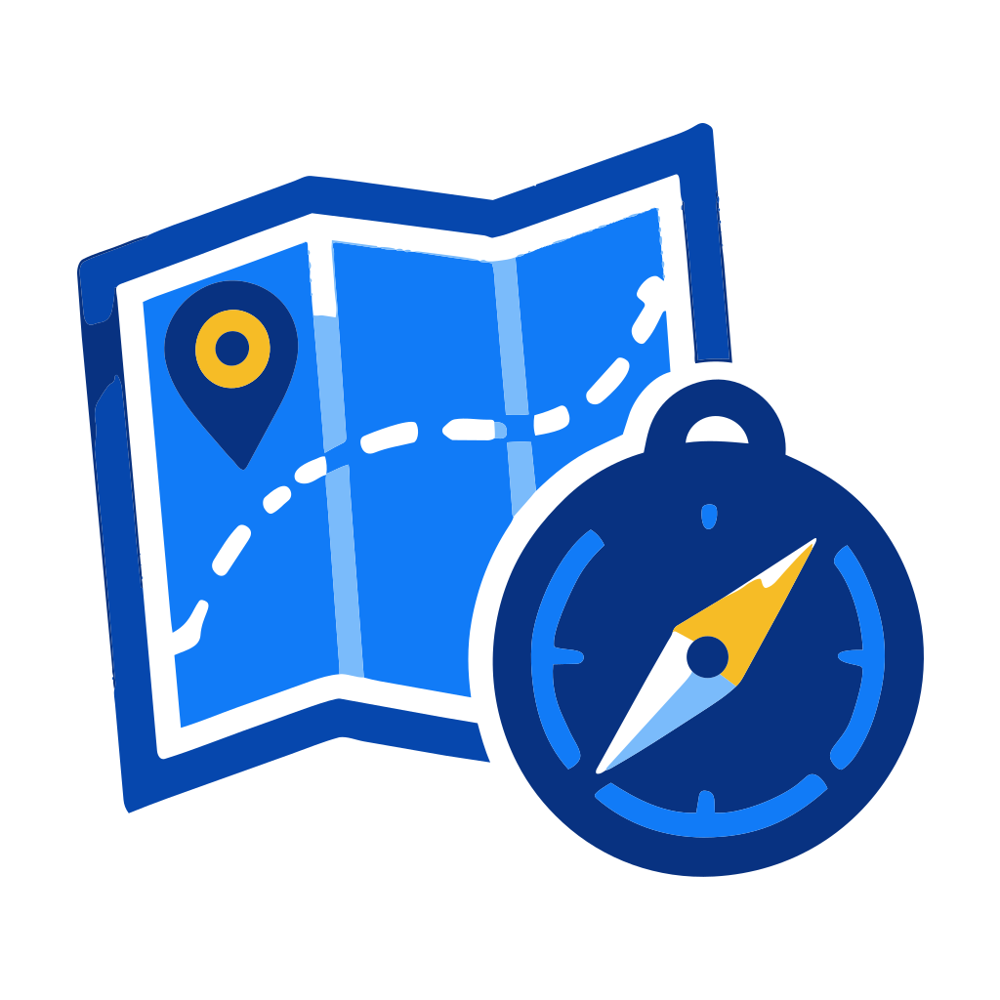
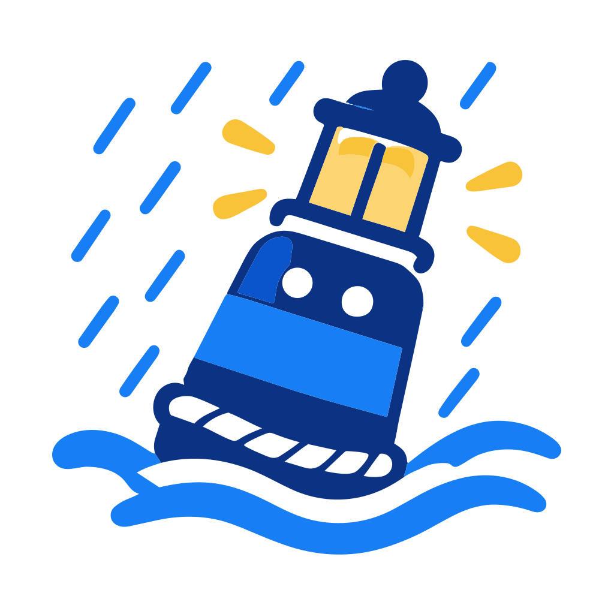

Sea chartsthat work withno signal.
Offline marine navigation for Filipino municipal fishermen.


The problem · Brgy. B. del Mundo, Mansalay
of about fishermen
own a GPS.
The other navigate by memory and landmarks.
to for a marine GPS plotter
No signal at sea, and other apps need one
Fisherfolk poverty incidence: (PSA, ), second highest of all basic sectors.






The solution
The phone he already owns.
Now a marine GPS.
- Sea chart with Philippine depths
- Save a spot, navigate back
- Trip recording, screen off
- Anchor-drag alarm
- AI fish ID
- One-tap SOS to family
Proof, not promise
Airplane mode.
Still navigating.
Keeps working
- Sea chart (downloaded)
- GPS position
- Saved spots
- Trip recording
- Navigation
- Catch logbook
- Fish guide
Waits for a connection
- Weather forecast
- AI fish ID
- Map downloads
- Cloud backup

Built for Philippine waters
Our seas. Our words.
local fish names in languages, across species
Philippine depth chart
Built into the app, so depth shows with no signal.
Anchor-drag alarm
Rings even on silent if the banca drifts.
SOS with load codes
Texts to contacts, with the borrow-load code for Globe, Smart or DITO.
Status of implementation
Not a plan.
Already live.
accounts on Google Play
as of

With the grants so far
Business model
Pay once.
Own it.
one-time · after a -day free trial
- No subscription. A monthly bill is the first thing dropped when the catch is poor.
- GCash, Maya, card or load, paid through Google Play.
What navigation costs over five years
Apps: yearly price for five years. Plotter: one-time hardware.
FishPin costs less than over five years.
Market
A
market.
- TAM municipal fishermen ×
- SAM smartphone ownership (assumption)
- SOM paid users by year three
Go-to-market
Start at home.
Grow town by town.
Financial projection · year one
Total investment
| Provincial grant | |
| Regional grant | |
| My counterpart of it in kind |
Honest math.
Still viable at licences: ROI, payback
Emergency
Send my location
Press and hold for seconds

Impact
Safety. Income.
Knowledge.
Safety at sea
Hold SOS for seconds: his exact position goes by SMS to to family contacts.
Income, less waste
Proven spots mean fewer wasted trips and less fuel. AI fish ID names an unfamiliar catch before he sells it.
Knowledge kept
Spots and catch logs stay with the family, not lost when the elder retires.
Every Filipino fisher knows where to fish, and the way home.
Q&A · Business Model Canvas, 2 Nov 2026
Key partners
BFAR extension workers, fisherfolk cooperatives, Municipal Agriculture Offices and barangays of the five towns (channels being built); Google Play; licensed cloud, map, weather and AI providers.
Key activities
Done: live on Google Play, field testing, demonstrations. This cycle: DTI, BIR and Mayor's Permit; the trial and one-time purchase; iOS release (planned Dec 2026); co-op sessions; ads; printed guides.
Key resources
Solo developer-founder, anak ng mangingisda. Laptop, two Android handsets, a test iPhone for the iOS build. Home office in Mansalay. Licensed Supabase, MapTiler, Open-Meteo, Gemini API.
Value proposition
Plotters cost to and other apps need a signal that doesn't exist at sea. FishPin: offline sea chart with PH depths, spot saving, trip recording, anchor alarm, AI fish ID and one-tap SOS. once after a -day free trial, no subscription. Fishermen own their data; it is never sold.
Customer relationships
A free trial at sea before paying once, so there is no renewal to lose. Lifetime updates, in-app bug reports, direct support by Messenger and SMS.
Channels
Google Play (GCash, Maya, card, load). co-op sessions across towns, Facebook and TikTok ads at a month, printed Tagalog guides and SOS cards.
Customer segments
Smartphone-owning municipal fishermen of Mansalay, Bulalacao, Roxas, Bongabong and Bansud, then MIMAROPA, Visayas and Bicol. Secondary: recreational anglers. TAM , SAM ( ownership, an assumption), SOM .
Cost structure
Capex · opex · total , funded by grants of and plus a counterpart. Mostly fixed, so margin improves as users grow.
Revenue streams
One stream by design: FishPin Lifetime at . licences: gross, net, ROI , payback .
Q&A · Investment cost, 12-month cycle
Capital expense
Fund source
| Provincial grant | |
| Regional grant (additional) | |
| Counterpart ( in kind, cash) | |
| Total investment |
Operating expense
Q&A · Cash flow, months 1 to 12
Licences sold each month
Q&A · Sensitivity at one-time
Viable at half the target.
| Licences sold | Net income | Return on investment | Payback |
|---|
Stricter view, also deducting every operating expense (ads, co-op sessions, internet, development tools, printed guides): ROI , payback .
Q&A · Competitors, published prices
Built for a different customer.
Q&A · Offline, honestly
What works with no signal.
Works with no signal
- Sea chart (after a map download)
- GPS position, speed and compass
- Saved spots and trails
- Trip recording, screen off
- Navigation and route ETA
- Catch logbook
- Fish guide
Needs a connection
- Weather and fishing forecast
- AI fish ID
- Place search
- Map downloads
- Cloud backup
- First sign-in
- SOS needs a cellular signal for SMS, not mobile data
FishPin is a navigation aid, not a replacement for official charts, radio or the Coast Guard.
Q&A · Data and ethics
His spots are his.
Fishermen own their data
Spots, trails and catch records belong to the fisherman who saved them.
Never sold
Fishing records are never sold to buyers who could use them against fishermen in price talks.
SOS goes where he says
Emergency texts go only to the to contacts he chooses.
Q&A · Risks
What could go wrong, and the plan.
| Risk | Mitigation |
|---|---|
| One-time price, no recurring revenue | Year one carries the whole capital cost; from cycle two only recurring services remain, while targets grow to and paid users. |
| No-cost map and weather tiers fail at scale | Commercial MapTiler, Open-Meteo and Supabase licences are in the budget. MapTiler's no-cost plan already ran out on 30 Oct 2026 and the charts were down until 1 Nov. |
| Fewer fishermen own smartphones than assumed | The ownership figure is an assumption, measured in the co-op sessions; the plan stays viable at licences. |
| Solo founder | Six years as a professional developer, an AI development assistant in the budget, and co-op officers trained first so adoption does not rest on one person. |
| Over-reliance at sea | FishPin is a navigation aid, not a replacement for official charts, radio or the Coast Guard; SOS needs a cellular signal for SMS. |

Q&A · Founder
Robert S. Maestro Jr.
- Anak ng mangingisda from Mansalay, Oriental Mindoro
- Six years as a professional software developer
- BS Information Technology
- Builds FishPin solo: Android app, cloud, maps and AI fish ID
- Provincial and MIMAROPA regional YFC winner